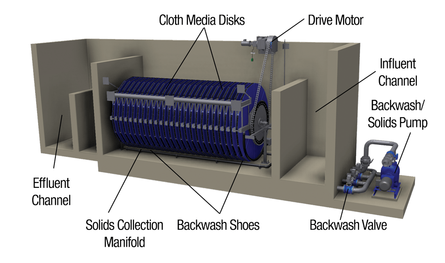

The highest hydraulic capacity cloth media filter for large-scale municipal and industrial WWTPs. Delivers superior tertiary filtration performance with efficient phosphorus and suspended solids removal.

The Aqua MegaDisk® was designed to meet the demands of large-scale WWTPs that need high-capacity tertiary filtration without compromising available space. The larger-diameter discs significantly increase the filtration area per module, resulting in higher flow per linear meter of channel.
With the same globally proven cloth media technology, the MegaDisk combines high hydraulic capacity with superior removal efficiency for suspended solids and total phosphorus, meeting the most stringent environmental discharge standards or effluent reuse requirements.
Large-diameter discs maximize filtration area, reducing the total channel length required.
High compatibility with coagulant dosing for efficient total phosphorus removal below 0.5 mg/L.
Effluent quality suitable for agricultural, industrial, and urban reuse according to applicable standards.
The Aqua MegaDisk® operates on the same outside-in principle as the other Cloth Media filters. Secondary effluent enters the channel and surrounds the large-diameter cloth media discs, filtering outside-in by differential pressure.
Automatic backwash is triggered by differential pressure, with sliding shoes traversing the entire surface of the large discs without interrupting treatment. Upstream coagulant dosing enhances phosphorus and residual turbidity removal.
Large-diameter discs increase the specific filtration area per installed module.
Upstream dosing point allows chemical precipitation of phosphorus and turbidity before filtration.
High-flow backwash system ensures effective cleaning of the large discs.
Tertiary polishing for WWTPs above 100,000 PE
Production of large volumes of treated effluent for industrial or agricultural reuse
High efficiency with coagulant dosing for restrictive total-P standards
Steel, petrochemical, pulp and paper with high effluent flows
Discharge compliance for sensitive water bodies and environmental protection areas
Retrofit in existing settling tanks to increase treatment capacity
Our technical team evaluates your WWTP and sizes the ideal Aqua MegaDisk® solution for your capacity and discharge standards.